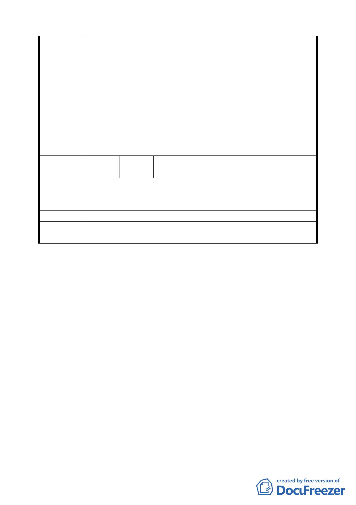

外，其他之中小企業與小廠根本無能力來進駐此高價位之
地點與投資設廠，因此空有政府設置專用工業區之美意，
也無法達成地盡其利或可充分利用。
三、政府可整齊統一規劃，可使南邊路邊之建築整齊又美觀，
也可算是政府回饋給原地主開路所剩之餘地適當之使用。
一、有關「小面積之修車保養是否要做消防與環保處理之設施」
乙節，因非屬都市計畫權責，請另依消防局及環保局之相
委員會決議
關規定辦理。
二、本區基地可從事汽車修理保養使用。
三、有關所建議於濱江街南側土地之意見，非本案計畫範圍，
錄請市府納入規劃參考。
編
號
3
陳情人
財政部國有財產局臺灣北區辦事處
（94.10.27 函）
本局經管臺北市中山區大佳段二小段 906 地號陸軍總司令部移
陳 情 理 由 交之國有土地，都市計畫使用分區屬「軍事機關用地」業經原
管機關檢討無公用需要，請參照鄰地辦理都市計畫變更事宜。
建 議 辦 法 請參照鄰地辦理都市計畫變更事宜。
委員會決議
本案係屬變更細部計畫案，所提陳情意見涉及主要計畫變更，
請發展局另案協助辦理。
討論事項四
案名：變更臺北市信義區福德段二小段 319 地號等 11 筆土地（廣
慈博愛院及福德平宅）機關用地、道路用地為社會福利設施
用地、公園用地、商業區及道路用地主要計畫
一、本案係市府 95 年 3 月 31 日以府都規字第 09577730700 號函
送到會。並自 95 年 4 月 3 日起公開展覽 30 天。
二、法令依據：都市計畫法第 27 條第 1 項 3 款
三、申請單位：臺北市政府
四、計畫範圍：詳計畫圖所示
五、變更理由及內容：詳計畫書
六、公民或團體所提意見：無
決議：本案及所附之修正對照表原則同意，惟請發展局就下列各
點再與相關單位確定後，提下次委員會議說明審決。
1.計畫範圍內於總量管制原則下，各使用分區之容積調配。
五